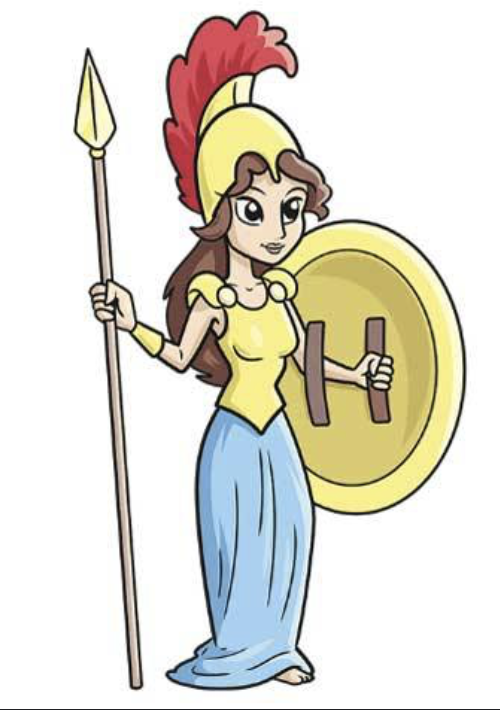

Greek Mythology Athena
Home, Hades, Aphrodite, Ares
In greek mythology, Athena is the Goddess of Wisdom, War, and Handicraft. She has been seen helping many warriors and even participating in some wars like The Trojan War. Although there has been some instance with her helping mortal life, she has not been keen into helping woman who have been hurt.
In one of the writings of Ancient Greek, Athena had transformed her priestess Medusa and the latter's sisters, Stheno and Euryale, into the Gorons after witnessing the young womens being violated by Poseidon in her temple.
What society depicts Athena.

How he is really seen.

She is depicted around Greke Mythology as a "daddy's daughter" when in fact she is a symbol of a woman who rather accept the path of the masculine position due to Zeus reputation of abusing and violating women (even his own children.) She is doing anything to survive and it gets towards her head. Athena is a good patron Goddess for study and career, or anything related to crafts or technology however wen it comes to the feminists area, she resonate more in helping male warriors and heroes unlike Artemis.